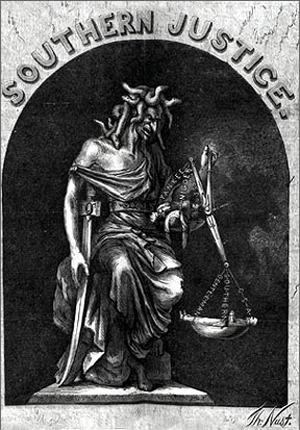

|
Black codes were laws enacted by Southern state legislatures in late
1865 and in 1866 to restrict the economic activities and control the
social behavior of freedmen and freedwomen. In effect for only a short
time, the Black Codes reflected Southern unwillingness to accept
emancipation and its consequences after the Civil War. The laws
contributed to the end of Presidential Reconstruction, and to the
imposition of a much greater federal role during Congressional, or
Radical, Reconstruction.
Black Codes had their origins before the end of the Civil War. It was
clear that the Southern economy, based predominantly on agriculture,
would need revitalization. Union generals sometimes pressured ex-slaves
to return to plantations, hoping that labor contracts would protect the
workers from mistreatment by their former masters. This did not prove to
|

This Thomas Nast cartoon was drawn to protest
the Black Codes. It shows the scales of justice out of balance
in the South's favor.
|
be the case. During the summer of 1865, planters organized county
associations to set wage scales and prevent competition for black labor.
Communities tried to reestablish white control over former slaves
through local ordinances that made vagrancy a crime and prohibited
African-Americans from holding certain jobs and owning real property.
It was only a matter of time until such controls began to be
established at the state level. Mississippi was the first state to enact
a black code in November 1865. Every African-American worker was
required to have a written employment contract during the first ten days
of January that covered the remainder of the year. Any worker who
violated the terms of the contract lost wages earned under the contract
and was subject to arrest. Penalties were imposed on any employer who
tried to hire a black worker already under contract. Other restrictions
were included that defined the limits of work. African-Americans were
forbidden to rent land in urban areas, and were limited to doing
agricultural labor. To insure that they did indeed work, the Mississippi
black code included criminal penalties for vagrancy. Insulting gestures
or language were also made into criminal offenses.
Many Southern states quickly enacted their own Black Codes. South
Carolina, for example, taxed African-Americans from $10 to $100 for
business activities other than farming or being a servant. In addition
to required annual labor contracts, a worker could not leave the
plantation without the employer's permission. In Louisiana, a worker who
did not comply with his labor contract could be arrested and forced to
work on public work projects without pay until willing to return to his
contract employer.
The Black Codes were drafted by conservative, respectable judges,
lawyers, and law professors, many of whom had not been advocates of
secession. The Black Codes reflected a Southern ideology that assumed
that African-Americans would not work voluntarily and were naturally
self-indulgent, unskilled, and illiterate. White Southerners believed
that African-Americans needed protection from these inclinations.
Fearful of insurrections, white Southerners also wanted the protection
they believed that the Black Codes could provide.
Southern leaders knew that the rest of the country was watching to
see how Southern whites treated the newly emancipated slaves in their
re-established political and legal systems. As such, the black codes did
grant certain rights to the former slaves, including the right to make
contracts, the right to sue and be sued, the right to marry other
African-Americans, and the right to buy, own, and transfer property.
Ultimately, this was not enough to convince Northern leaders that
Southerners had changed their ways.
Black codes proved a good source of propaganda for Radical
Republicans. Although few Northerners believed in the inherent equality
of blacks and whites, most did advocate equal access to the legal
system, equal application of criminal laws, and equal rights to sell
one's labor in a free market. Even Republican moderates were offended
that the former Confederate states, so soon after rejoining the Union,
rejected the free labor system that existed throughout the rest of the
United States.
The perception that Southern whites were unreformed created a hostile
climate in Congress. In December 1865, Congressional leaders responded
by refusing to seat delegations elected to represent the former
Confederate states. In early 1866, Congress extended the life of the
Freedmen's Bureau beyond its initial one year and added new powers,
including the oversight of labor agreements. Eventually, Congress put
the South under military control, and tried to impose equality on the
South. The Black Codes were forcibly repealed by legislative action or
by federal officials overseeing the Reconstruction governments, and
virtually none of them remained on the books after 1867.
The disappearance of the Black Codes was a short-lived victory for
African-Americans. Eventually, Northerners lost interest in the status
of the freedmen, and by 1876 Reconstruction had come to an end.
Sharecropping, the legalization of segregation, and a number of other
factors allowed white Southerners to create the racial order they
desired. African-Americans in the South would remain in a subordinate
position for at least another century.
Source: Joan Waugh, ed., Facts on File Encyclopedia of American
History: Civil War and Reconstruction, 1856 to 1869 (New York: Facts on
File, 2003), 29-30.
|